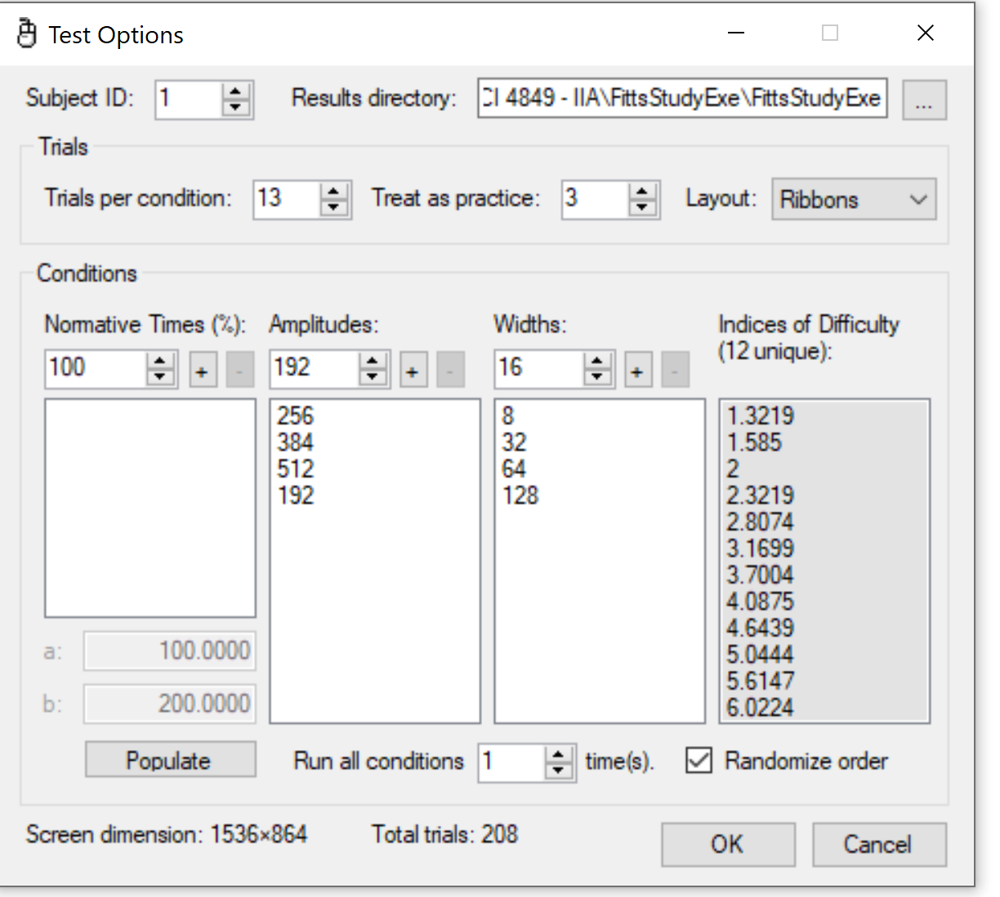
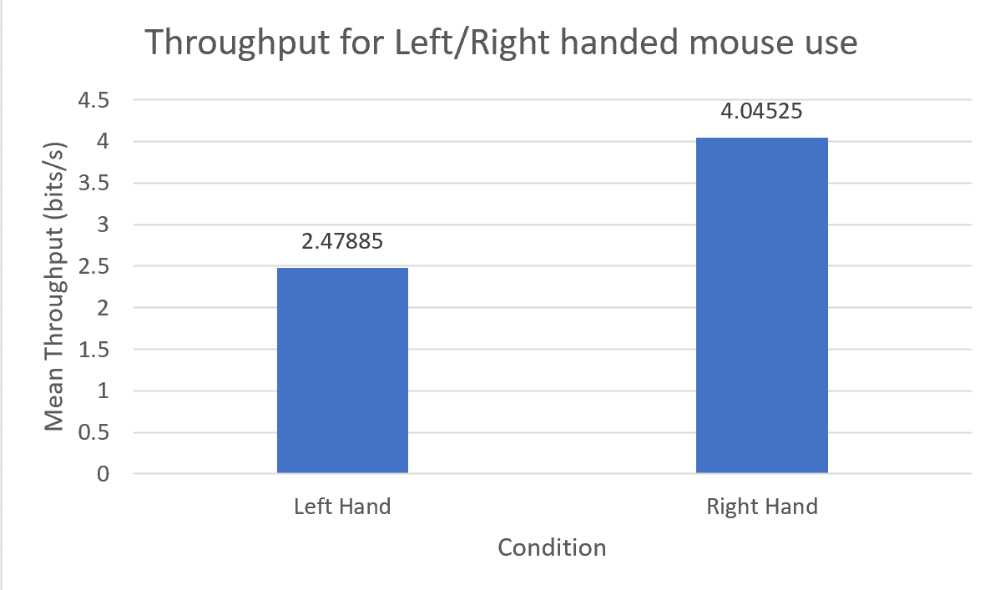

I tested the conditions of using the right hand and left hand to control a mouse for the test. I used FittsStudy to test these conditions and used 4 different amplitudes and widths for each test. I had my dad test his right hand first and left hand second, and I did mine in the opposite order. Both of us used the same test options that the software then randomized the order of during the actual test. The first image below is what test conditions were used for all rounds. I found that using our right hands (dominate hand for us both) was significantly faster and more accurate than our left hands. The "grand throughput" for the right hand was 4.045 bits/s while the left hand was 2.479 bits/s.
Below is a screenshot of my right hand attempt using the software and what the test looks like in progress. Fitt's Study software
Below is the chart that shows the mean throughput for both conditions tested with their full calculated values
